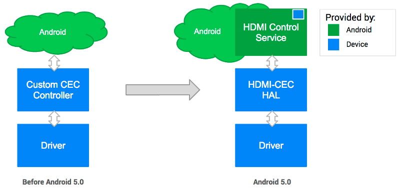
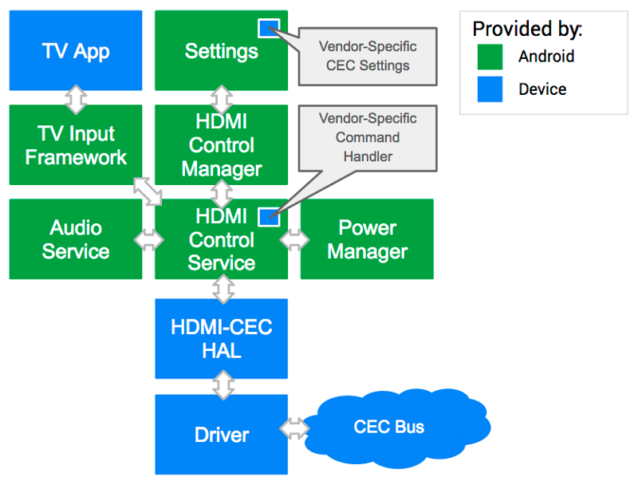

In this document
Introduction
The High-Definition Multimedia Interface Consumer Electronics Control (HDMI-CEC) standard allows mulitmedia consumer products to communicate and exchange information with each other. HDMI-CEC supports many features, like Remote Control Passthrough and System Audio Control, but one of the most popular is One Touch Play. One Touch Play lets a media source device turn on the TV and switch its input port automatically, so you don’t have to search for the TV remote to switch from your Chromecast to Blu-ray player.
Most manufacturers have adopted HDMI-CEC so their devices work with other companies’ devices. But because each manufacturer implements the HDMI-CEC standard in different ways, devices don’t always understand each other and supported features vary between devices. Because of this variance, consumers can’t safely assume that two products that claim CEC support are completely compatible.
Solution
With the introduction of the Android TV Input Framework (TIF), HDMI-CEC brings
together all connected devices and minimizes compatibility issues. Android has
created a system service called HdmiControlService to alleviate these pain points.
By offering HdmiControlService as a part of the Android ecosystem, Android hopes to provide:
- A standard implementation of HDMI-CEC for all manufacturers, which will reduce device incompatibility. Previously, manufacturers had to develop their own implementations of HDMI-CEC or use third-party solutions.
- A service that is well-tested against numerous HDMI-CEC devices already in the market. Android has been conducting rigorous research on compatibility issues found among the products and collecting useful advice from partners experienced in the technology. The CEC service is designed to keep a healthy balance between the standard and modifications to that standard so that it works with the products that people already use.
Overall design
HdmiControlService is connected with the rest of the system like TV Input Framework (TIF), Audio service, and Power service to implement the various features the standard
specifies.
See the following diagram for a depiction of the switch from a custom CEC controller to an implementation of the simpler HDMI-CEC hardware abstraction layer (HAL).
Figure 1. HDMI Control Service replacement
Implementation
See the following diagram for a detailed view of the HDMI control service.
Figure 2. HDMI Control Service details
Here are the key ingredients to a proper Android HDMI-CEC implementation:
- A manager class
HdmiControlManagerprovides privileged apps with the API. System services like TV Input Manager service and Audio service can grab the service directly. - The service is designed to allow hosting more than one type of logical device.
- HDMI-CEC is connected with the hardware via a hardware abstraction layer (HAL) to simplify handling differences of the protocol and signalling mechanisms between the devices. The HAL definition is available for device manufacturers to use to implement the HAL layer.
Note: Device manufacturers should add the following line into PRODUCT_COPY_FILES in device.mk.
PRODUCT_COPY_FILES += \ frameworks/native/data/etc/android.hardware.hdmi.cec.xml:system/etc/permissions/android.hardware.hdmi.cec.xml
Depending on whether your device is a HDMI sink device or a HDMI source device,
device manufacturers need to set ro.hdmi.device_type in device.mk for HdmiControlService to work correctly.
For HDMI source devices, like Over the Top (OTT) boxes, set:
PRODUCT_PROPERTY_OVERRIDES += ro.hdmi.device_type=4
For HDMI sink devices, like panel TVs, set:
PRODUCT_PROPERTY_OVERRIDES += ro.hdmi.device_type=0
- A device manufacturer-provided proprietary CEC controller cannot coexist with
HdmiControlService. It must be disabled or removed. Common requirements for this come from the need to handle manufacturer-specific commands. The manufacturer-specific command handler should be incorporated into the service by extending/modifying it. This work is left to the device manufacturer and not specified by Android. Note that any change made in the service for manufacturer-specific commands must not interfere with the way standard commands are handled or the device will not be Android compatible. - Access to the HDMI-CEC service is guarded with the protection level
SignatureOrSystem. Only system components or the apps placed in/system/priv-appcan access the service. This is to protect the service from abuse by apps with malicious intent.
Android supports type TV/Display(0) and playback device(4), which can issue the One Touch Play command to display. The other types (tuner
and recorder) are currently not supported.
HDMI-CEC HAL definition
In order to have the service in action, the HDMI-CEC HAL needs to be implemented to the definition provided by Android. It abstracts differences in the hardware level and exposes the primitive operations (allocate/read/write, etc.) to the upper layer through API.
The API calls that device manufacturers must support are:
TX/RX/Events
send_messageregister_event_callback
Info
get_physical_addressget_versionget_vendor_idget_port_info
Logical Address
add_logical_addressclear_logical_address
Status
is_connected set_optionset_audio_return_channel
Here is an excerpt of the HDMI-CEC HAL definition regarding APIs:
#ifndef ANDROID_INCLUDE_HARDWARE_HDMI_CEC_H
#define ANDROID_INCLUDE_HARDWARE_HDMI_CEC_H
...
/*
* HDMI-CEC HAL interface definition.
*/
typedef struct hdmi_cec_device {
/**
* Common methods of the HDMI-CEC device. This *must* be the first member of
* hdmi_cec_device as users of this structure will cast a hw_device_t to hdmi_cec_device
* pointer in contexts where it's known the hw_device_t references a hdmi_cec_device.
*/
struct hw_device_t common;
/*
* (*add_logical_address)() passes the logical address that will be used
* in this system.
*
* HAL may use it to configure the hardware so that the CEC commands addressed
* the given logical address can be filtered in. This method can be called
* as many times as necessary in order to support multiple logical devices.
* addr should be in the range of valid logical addresses for the call
* to succeed.
*
* Returns 0 on success or -errno on error.
*/
int (*add_logical_address)(const struct hdmi_cec_device* dev, cec_logical_address_t addr);
/*
* (*clear_logical_address)() tells HAL to reset all the logical addresses.
*
* It is used when the system doesn't need to process CEC command any more,
* hence to tell HAL to stop receiving commands from the CEC bus, and change
* the state back to the beginning.
*/
void (*clear_logical_address)(const struct hdmi_cec_device* dev);
/*
* (*get_physical_address)() returns the CEC physical address. The
* address is written to addr.
*
* The physical address depends on the topology of the network formed
* by connected HDMI devices. It is therefore likely to change if the cable
* is plugged off and on again. It is advised to call get_physical_address
* to get the updated address when hot plug event takes place.
*
* Returns 0 on success or -errno on error.
*/
int (*get_physical_address)(const struct hdmi_cec_device* dev, uint16_t* addr);
/*
* (*send_message)() transmits HDMI-CEC message to other HDMI device.
*
* The method should be designed to return in a certain amount of time not
* hanging forever, which can happen if CEC signal line is pulled low for
* some reason. HAL implementation should take the situation into account
* so as not to wait forever for the message to get sent out.
*
* It should try retransmission at least once as specified in the standard.
*
* Returns error code. See HDMI_RESULT_SUCCESS, HDMI_RESULT_NACK, and
* HDMI_RESULT_BUSY.
*/
int (*send_message)(const struct hdmi_cec_device* dev, const cec_message_t*);
/*
* (*register_event_callback)() registers a callback that HDMI-CEC HAL
* can later use for incoming CEC messages or internal HDMI events.
* When calling from C++, use the argument arg to pass the calling object.
* It will be passed back when the callback is invoked so that the context
* can be retrieved.
*/
void (*register_event_callback)(const struct hdmi_cec_device* dev,
event_callback_t callback, void* arg);
/*
* (*get_version)() returns the CEC version supported by underlying hardware.
*/
void (*get_version)(const struct hdmi_cec_device* dev, int* version);
/*
* (*get_vendor_id)() returns the identifier of the vendor. It is
* the 24-bit unique company ID obtained from the IEEE Registration
* Authority Committee (RAC).
*/
void (*get_vendor_id)(const struct hdmi_cec_device* dev, uint32_t* vendor_id);
/*
* (*get_port_info)() returns the hdmi port information of underlying hardware.
* info is the list of HDMI port information, and 'total' is the number of
* HDMI ports in the system.
*/
void (*get_port_info)(const struct hdmi_cec_device* dev,
struct hdmi_port_info* list[], int* total);
/*
* (*set_option)() passes flags controlling the way HDMI-CEC service works down
* to HAL implementation. Those flags will be used in case the feature needs
* update in HAL itself, firmware or microcontroller.
*/
void (*set_option)(const struct hdmi_cec_device* dev, int flag, int value);
/*
* (*set_audio_return_channel)() configures ARC circuit in the hardware logic
* to start or stop the feature. Flag can be either 1 to start the feature
* or 0 to stop it.
*
* Returns 0 on success or -errno on error.
*/
void (*set_audio_return_channel)(const struct hdmi_cec_device* dev, int flag);
/*
* (*is_connected)() returns the connection status of the specified port.
* Returns HDMI_CONNECTED if a device is connected, otherwise HDMI_NOT_CONNECTED.
* The HAL should watch for +5V power signal to determine the status.
*/
int (*is_connected)(const struct hdmi_cec_device* dev, int port);
/* Reserved for future use to maximum 16 functions. Must be NULL. */
void* reserved[16 - 11];
} hdmi_cec_device_t;
#endif /* ANDROID_INCLUDE_HARDWARE_HDMI_CEC_H */
The API lets the service make use of the hardware resource to send/receive HDMI-CEC commands, configure necessary settings, and (optionally) communicate with the microprocessor in the underlying platform that will take over the CEC control while the Android system is in standby mode.
Testing
Device manufacturers must test the APIs of the HDMI-CEC HAL with their own tools to make sure they provide expected functionality.